1장에서 신경망이 경사 하강 알고리즘을 이용하여 가중치와 편향을 학습하는 방법을 배웠다. 하지만 설명하지 않은 부분이 있다. 비용함수의 경사(gradient)를 계산하는 방법은 이야기하지 않았다. 2장에서는 경사(gradient)를 빠르게 계산하는 알고리즘인 역전파(backpropagation) 알고리즘해 대해 알아보자.
역전파 알고리즘은 1970년대 처음으로 소개되었지만 데이빗 루멜하트(David Runelhart), 제프리 힌턴(Geoffrey Hinton), 로날드 윌리엄스(Ronald Williams)의 1985년 논문이 발표되기 전까지 중요하게 여겨지지 않았다. 이 논문에서는 역전파 알고리즘이 이전의 학습 방식보다 훨씬 빠르게 동작하는 여러 신경망을 소개한다. 이 논문 덕분에 신경망을 사용하여 이전에 풀 수 없었던 문제를 풀 수 있다. 현재 신경망을 학습시킬 때 역전파 알고리즘은 많은 일을 하고 있다.
2장은 책의 다른 부분보다 수학적인 내용을 많이 담고 있다. 수학을 싫어하는 사람은 2장을 건너뛰어 역전파 알고리즘을 모른채 넘어가고 싶을 수 있다. 시간을 내서 이 부분을 공부해야하는 이유는 무엇일까?
물론 이유는 이해이다. 신경망의 어떤 가중치 $w$ (또는 편향 $b$)에 대한 비용함수 $C$의 편도함수 $\partial C / \partial w$은 역전파 알고리즘의 핵심 부분이다. 이 수식을 통해 가중치와 편향이 변할 때 비용함수가 얼마나 빨리 바뀌는지 알 수 있다. 수식이 다소 복잡하지만 자연스럽고 직관적인 해석을 가지는 수식의 아름다움도 볼 수 있다. 그래서 역전파 알고리즘은 단지 학습을 위한 빠른 알고리즘만 의미하는 것이 아니라 가중치와 편향이 변할 때 신경망은 전체적으로 어떻게 변하는지 구체적인 통찰을 통해 알 수 있다. 이것이 자세히 공부해야 하는 이유이다.
그래도 2장을 건너 뛰고 다음 장으로 바로 넘어가도 괜찮다. 역전파 알고리즘을 모른채 넘어가도 다른 내용을 이해할 수 있도록 책을 썼다. 물론 책의 뒷부분에서 2장의 결과를 언급하는 경우는 있다. 이런 점에서 모든 추론 과정을 따라가지 않더라도 중요한 결론을 이해할 수 있어야 한다.
역전파 알고리즘을 알아보기 전에 신경망의 출력을 계산하는 빠른 행렬 기반 알고리즘으로 연습해보자. 1장의 끝 부분에서 이 알고리즘을 간단히 살펴보았지만 다시 한번 자세히 살펴볼 필요가 있다. 실제로 이를 통해 역전파 알고리즘에서 사용하는 표기법에 익숙해질 수 있다.
신경망에서 가중치를 표기하는 방법을 분명히 해보자.
$w^l_{jk}$은 $(l-1)^{\rm th}$번째 층의 $k^{\rm th}$번째 뉴런과 $l^{\rm th}$번째 층의 $j^{\rm th}$번째 뉴런을 연결하는 가중치를 나타낸다.
예를 들어 아래의 그림은 두 번째 층의 네 번째 뉴런과 세 번째 층의 두 번째 뉴런을 연결하는 가중치를 보여준다.
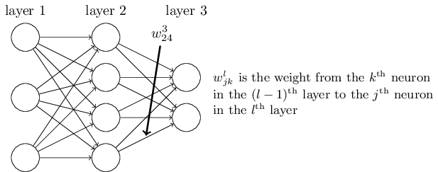
이 표기법을 처음 사용하면 익숙해지는데 오래 걸릴 수 있다.
하지만 조금만 노력하면 표기법이 쉽고 자연스럽다는 것을 알 수 있다.
표기법 중 이상한 점 하나는 $j$와 $k$의 순서이다.
$j$가 입력 뉴런을 나타내고 $k$가 출력 뉴런을 나타내는 것이 더 자연스럽다고 느낄 수 있다.
이러한 순서로 쓰는 이유를 아래에서 설명하겠다.
신경망의 편향과 활성화(activation)에도 비슷한 표기법을 사용해보자.
$b^l_j$은 $l^{\rm th}$번째 층의 $j^{\rm th}$번째 뉴런의 편향을 나타낸다.
$a^l_j$은 $l^{\rm th}$번째 층의 $j^{\rm th}$번째 뉴런의 활성화(activation)를 의미한다.
아래의 그림은 실제로 사용하는 표기법의 한 예를 보여준다.
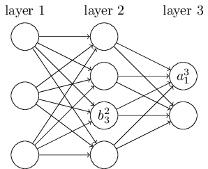
$l$번째 층에 있는 $j$번째 뉴런의 활성화 $a^{l}_j$은 $(l - 1)$번째 층의 활성화와 관련이 있다.
다음 식을 보자. (마지막 장에서 식
(4)
$$\begin{eqnarray}
\frac{1}{1+\exp(-\sum_j w_j x_j-b)} \nonumber\end{eqnarray}$$
와 토론 부분을 비교해 보아라)
$$\begin{eqnarray}
a^{l}_j = \sigma\left( \sum_k w^{l}_{jk} a^{l-1}_k + b^l_j \right),
\tag{23}\end{eqnarray}$$
여기서 합은 $(l - 1)$번째 층에 있는 모든 뉴런 $k$에 대한 것이다.
각 층 $l$에 대한 가중치 행렬(weight matrix) $w^l$을 정의해서 이 식을 행렬 형태로 바꾸어 쓰자.
가중치 행렬 $w^l$의 각 원소는 $l$번째 층의 뉴런을 연결하는 가중치이다.
즉 $j$ 열 $k$ 행에 있는 원소는 $w^l_{jk}$이다.
비슷한 방법으로 각 층 $l$에 대한 편향 벡터 $b^l$을 정의하자.
편향 벡터의 각 원소는 $b^l_j$이며 $l$번째 층에 있는 각 뉴런에 대한 값이다.
마지막으로 각 성분이 활성화 $a^l_j$인 활성화 벡터 $a^l$을 정의하자.
마지막으로 $\sigma$와 같은 함수를 벡터화하여 식 (23) $$\begin{eqnarray} a^{l}_j = \sigma\left( \sum_k w^{l}_{jk} a^{l-1}_k + b^l_j \right) \nonumber\end{eqnarray}$$ 을 행렬 형태로 바꿔보자. 1장에서 벡터화를 잠깐 살펴보았다. 다시 간단하게 이야기하면 기본적인 아이디어는 벡터 $v$의 모든 원소에 $\sigma$와 같은 함수를 적용하는 것이다. 각 원소마다 함수를 적용하는 표기법 $\sigma(v)$는 각 원소마다 함수를 적용한다는 것을 의미한다. 즉 $\sigma(v)$의 원소는 단지 $\sigma(v)_j = \sigma(v_j)$을 의미한다. 예를 들어 함수 $f(x) = x^2$을 벡터화하면 다음과 같다. $$\begin{eqnarray} f\left(\left[ \begin{array}{c} 2 \\ 3 \end{array} \right] \right) = \left[ \begin{array}{c} f(2) \\ f(3) \end{array} \right] = \left[ \begin{array}{c} 4 \\ 9 \end{array} \right], \tag{24}\end{eqnarray}$$ 즉 함수 $f$의 벡터화는 벡터의 모든 원소를 제곱하는 것을 의미한다.
이 표기법을 이용해 식 (23) $$\begin{eqnarray} a^{l}_j = \sigma\left( \sum_k w^{l}_{jk} a^{l-1}_k + b^l_j \right) \nonumber\end{eqnarray}$$ 을 다시 쓸 수 있다. $$\begin{eqnarray} a^{l} = \sigma(w^l a^{l-1}+b^l). \tag{25}\end{eqnarray}$$ 위 식을 통해 어떻게 한 층의 활성이 이전 층의 활성과 연관있는지 폭넓게 이해할 수 있다. 단지 활성에 가중치 행렬을 곱한 다음 편향 벡터를 더하고 함수 $\sigma$를 적용한다. 이러한 관점은 이제까지 봐왔던 뉴런 단위의 시각보다 더 쉽고 간결하다.(적은 인덱스를 포함한다) 이 방법으로 무엇이 일어나는지 정확히 알 수 있으며 인덱스를 복잡하게 사용하는 것에서 벗어날 수 있다. 실제로 대부분의 행렬 라이브러리는 행렬 곱, 벡터 덧셈, 벡터화를 구현하는 빠른 방법을 제공하므로 위 식은 유용하다. 실제로 1장에서 살펴본 코드에서 신경망의 행동을 계산하기 위해 이 식을 암묵적으로 사용했다.
$a^l$을 계산하기 위해 식 (25) $$\begin{eqnarray} a^{l} = \sigma(w^l a^{l-1}+b^l) \nonumber\end{eqnarray}$$ 를 사용하는 과정에서 $z^l \equiv w^l a^{l-1}+b^l$을 계산한다. 이 값 $z^l$을 $l$층의 뉴런에 대한 가중치 입력(weighted input)이라 한다. 이번 장 뒷 부분에서 가중치 입력 $z^l$을 이용하겠다. 식 (25) $$\begin{eqnarray} a^{l} = \sigma(w^l a^{l-1}+b^l) \nonumber\end{eqnarray}$$ 을 가중치 입력 항에 대해 $a^l = \sigma(z^l)$과 같이 쓰는 경우도 있다. 여기서 $z^l$은 $z^l_j = \sum_k w^l_{jk} a^{l-1}_k+b^l_j$을 원소로 가지며 $z^l_j$은 $l$층에 있는 뉴런 $j$에 대한 활성 함수의 가중치 입력이라는 점을 기억해두자.
역전파 알고리즘의 목표는 비용함수 $C$를 신경망에서 가중치 $w$와 편향 $b$에 대한 편도함수 $\partial C / \partial w$와 $\partial C / \partial b$를 계산하는 것이다. 역전파 알고리즘이 동작하려면 비용함수의 형태에 대해 두 가지 가정을 해야한다. 먼저 이러한 가정을 하기 전에 비용함수의 한 예를 살펴보도록 하자. 1장에서 살펴본 이차 비용함수를 보자.(식 (6) $$\begin{eqnarray} C(w,b) \equiv \frac{1}{2n} \sum_x \| y(x) - a\|^2 \nonumber\end{eqnarray}$$ ) 이전 절의 표기법을 이용하여 이차 비용함수를 다음과 같이 쓸 수 있다. $$\begin{eqnarray} C = \frac{1}{2n} \sum_x \|y(x)-a^L(x)\|^2, \tag{26}\end{eqnarray}$$ 여기서 $n$은 전체 학습 데이터의 개수이고, 합은 개별 학습 데이터 대한 값이다. $L$은 신경망에서 층의 개수를 나타내고 $a^L = a^L(x)$은 입력이 $x$일 때 신경망의 활성 출력 벡터를 의미한다.
자 이제 비용함수 $C$에 역전파 알고리즘을 적용하기 위해 어떤 가정을 해야할까? 첫 번째는 비용함수 $C$를 개별 학습 데이터 $x$에 대한 비용함수 $C_x$의 평균 $C = \frac{1}{n} \sum_x C_x$로 쓸 수 있다는 가정이다. 이는 이차 비용함수인 경우에 대한 가정이고 여기서 개별 학습 데이터에 대한 비용은 $C_x = \frac{1}{2} \|y-a^L \|^2$이다. 이 가정은 이 책에서 보게 될 다른 비용함수에 대해서도 성립한다.
이 가정이 필요한 이유는 역전파 알고리즘이 사실 개별 학습 데이터에 대한 편도함수 $\partial C_x / \partial w$과 $\partial C_x / \partial b$을 계산하기 때문이다. 그러므로 학습 데이터에 대한 평균을 이용해 $\partial C / \partial w$과 $\partial C / \partial b$을 계산한다. 사실 이 가정을 이용해 학습 데이터 $x$는 고정된 값이라 가정하하여 $x$를 제거해 비용 $C_x$를 $C$로 쓸 것이다. 결국 $x$를 다시 쓸 것이지만 당분간은 표기를 단순하게 할 수 있는 방법이다.
두 번째는 신경망의 출력에 대한 함수로 쓸 수 있다는 가정이다.
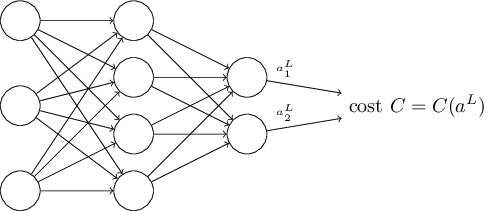
예를 들어 개별 학습 데이터 $x$에 대한 이차 비용함수 다음과 같이 쓸 수 있으므로 이 조건을 만족한다.
$$\begin{eqnarray}
C = \frac{1}{2} \|y-a^L\|^2 = \frac{1}{2} \sum_j (y_j-a^L_j)^2,
\tag{27}\end{eqnarray}$$
그러므로 이차 비용함수는 출력 활성 함수이다.
물론 이 비용함수는 원하는 출력 $y$에 의존하므로 왜 비용함수를 $y$에 대한 함수로 쓰지 않는지 궁금할 것이다.
입력 학습 데이터 $x$는 고정된 값이므로 출력 $y$ 또한 고정된 매개변수인 것을 기억하자.
특히 가중치와 편향을 바꾸면서 수정할 수 있는 값이 아니다.
즉 신경망이 학습하는 것이 아니다.
그러므로 비용함수 $C$를 출력 활성 $a^L$에 대한 함수로 생각하고 $y$를 단지 함수를 정의하는데 도움을 주는 매개변수로 생각하면 된다.
역전파 알고리즘은 벡터 덧셈, 벡터와 행렬 곱셈 등과 같은 일반적인 선형대수 연산을 기반으로 한다. 하지만 잘 알려지지 않은 연산 하나를 사용한다. 차원이 같은 두 벡터 $s$와 $t$를 가정하자. $s \odot t$은 원소 단위 곱(elementwise product)을 의미한다. 그러므로 $s \odot t$의 원소는 단지 $(s \odot t)_j = s_j t_j$이다. 예를 들면 아래와 같다. $$\begin{eqnarray} \left[\begin{array}{c} 1 \\ 2 \end{array}\right] \odot \left[\begin{array}{c} 3 \\ 4\end{array} \right] = \left[ \begin{array}{c} 1 * 3 \\ 2 * 4 \end{array} \right] = \left[ \begin{array}{c} 3 \\ 8 \end{array} \right]. \tag{28}\end{eqnarray}$$ 이러한 종류의 원소 단위 곱셈을 아다마르 곱(Hadamard product) 또는 슈어 곱(Schur product)이라 한다. 책에서는 이를 아다마르 곱이라 하겠다. 좋은 행렬 라이브러리는 아마다르 곱의 구현을 제공하고 이는 역전파 알고리즘 구현을 편리하게 한다.
역전파 알고리즘은 신경망에서 가중치와 편향의 변호가 어떻게 비용함수를 바꾸는지 이해하는 것이다. 궁극적으로 편도함수 $\partial C / \partial w^l_{jk}$과 $\partial C / \partial b^l_j$ 계산을 의미한다. 하지만 이를 계산하기 위해 먼저 $l$번째 층에 있는 $j$번째 뉴런에서 오차(error) $\delta^l_j$를 도입하자. 역전파 알고리즘을 통해 오차 $\delta^l_j$을 계산할 수 있고 그러면 $\partial C / \partial w^l_{jk}$과 $\partial C / \partial b^l_j$을 $\delta^l_j$과 연관지을 수 있다.
오차를 어떻게 정의하는지 살펴보자.
신경망에 악마가 있다고 상상해보자.
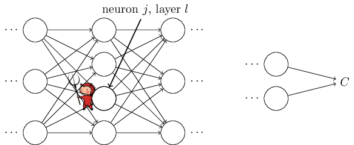
악마는 $l$층의 $j$번째 뉴런에 있다.
이 뉴런에 입력이 들어오면 악마는 뉴런의 연산을 방해한다.
이는 뉴런의 가중치 입력에 작은 변화 $\Delta z^l_j$를 주고 뉴런은 $\sigma(z^l_j+\Delta z^l_j)$을 출력한다.
이 변화는 신경망에서 뒤이어 나오는 층에 전달되어 전체적은 비용에 $\frac{\partial C}{\partial z^l_j} \Delta z^l_j$만큼의 변화를 준다.
이제 이 악마는 착한 악마가 되어 비용을 개선시키는데 도움을 주려 한다.
즉 악마는 비용을 더 작게 만드는 $\Delta z^l_j$을 찾으려고 노력한다.
$\frac{\partial C}{\partial z^l_j}$가 큰 값을 가진다고 가정하자.(양수든 음수든 상관없다)
그러면 악마는 $\frac{\partial C}{\partial z^l_j}$와 다른 부호를 가지는 $\Delta z^l_j$을 선택해 비용을 조금씩 낮출 수 있다.
그에 반해 $\frac{\partial C}{\partial z^l_j}$이 0에 가까우면 악마는 가중치 입력 $z^l_j$을 바꿔서 비용을 향상시킬 수 없다.
악마가 알 수 있는 한 뉴런은 이미 거의 최적에 가깝다.
*
물론 이는 작은 변화 $\Delta z^l_j$인 경우에만 해당한다.
악마가 그러한 작은 변화만 만든다고 가정한다.
그래서 $\frac{\partial C}{\partial z^l_j}$이 뉴런에서 오차의 척도라는 점을 발견할 수 있다.
이 이야기에 영감을 받아 $l$층에 있는 뉴런 $j$의 오차 $\delta^l_j$을 다음과 같이 정의한다. $$\begin{eqnarray} \delta^l_j \equiv \frac{\partial C}{\partial z^l_j}. \tag{29}\end{eqnarray}$$ $\delta^l$은 $l$층과 관련된 오차 벡터를 나타낸다. 역전파 알고리즘을 통해 모든 층에 대한 $\delta^l$을 계산할 수 있고 이를 통해 실제로 구하고자 하는 값 $\partial C / \partial w^l_{jk}$과 $\partial C / \partial b^l_j$을 알 수 있다.
악마가 왜 가중치 입력 $z^l_j$을 바꾸는지 궁금할 수 있다.
물론 악마가 출력 활성 $a^l_j$을 바꿔 $\frac{\partial C}{\partial a^l_j}$을 오차의 척도로 상상하는게 더 자연스러울 수 있다.
사실 이렇게 하면 아래에서 살펴볼 내용과 비슷하게 동작한다.
하지만 이는 역전파 알고리즘을 수학적으로 복잡하게 만든다.
그래서 $\delta^l_j = \frac{\partial C}{\partial z^l_j}$을 오차의 척도로 보려 한다.
*
MNIST 같은 분류 문제에서 "오차"는 분류 실패율을 의미하기도 한다.
예를 들어 신경망이 96.0%의 정확도로 숫자를 분류하면
오차는 4.0%이다.
물론 이는 $\delta$ 벡터의 의미와 다르다.
실제로 단어의 의미가 무엇인지 헷갈리면 안된다.
공격 계획: 역전파 알고리즘은 네 개의 핵심 식을 기본으로 한다. 이 식을 통해 오차 $\delta^l$과 비용함수의 경사 둘 다 계산할 수 있다. 아래에서 네 개의 식을 살펴보겠다. 하지만 네 개의 식을 동시에 완전히 이해하려 하지 않아도 된다. 완전히 이해하려 하다가 큰 실망을 마주할 수 있다. 사실 역전파 알고리즘 식을 깊이 이해하려 하면 할수록 상당한 시간과 인내가 필요하다. 인내를 많이할수록 그에 따라 많은 부분을 이해할 수 있다. 그래서 이번 절은 식을 완전히 이해하기 위한 시작에 불과하다.
이 장의 뒷부분에서 식에 대해 깊이있게 살펴볼 방법들을 간단히 알아보자. 먼저 간단히 식을 증명하여 식이 성립하는 이유를 설명한다. 의사코드를 이용해 식을 알고리즘 형태로 써보고 파이썬 코드로 의사코드를 어떻게 구현할 수 있는지 살펴보자. 그리고 이 장의 마지막 절에서 역전파 알고리즘 식이 무엇을 의미하는지 어떻게 발견할 수 있는지 직관적으로 이해해보자. 이를 설명하는 중간에 네 가지 핵심 식을 반복해서 살펴볼 것이다. 깊이 이해할수록 이 식에 익숙해질 것이고 심지어 아름답고 당연하게 느껴질 수 있다.
출력 층의 오차에 대한 식, $\delta^L$: $\delta^L$의 원소는 다음과 같다. $$\begin{eqnarray} \delta^L_j = \frac{\partial C}{\partial a^L_j} \sigma'(z^L_j). \tag{BP1}\end{eqnarray}$$ 이는 아주 자연스러운 표현이다. 우변의 첫번째 항 $\partial C / \partial a^L_j$은 $j$번째 출력 활성에 대한 함수이며 비용이 얼마나 빠르게 변하는지 측정한다. 예를 들어 $C$가 특정한 출력 뉴런 $j$에 상관 없으면 $\delta^L_j$은 작은 값을 가진다. 우변의 두번째 항 $\sigma'(z^L_j)$은 $z^L_j$에서 활성 함수 $\sigma$가 얼마나 빠르게 변하는지 측정한다.
(BP1) $\begin{eqnarray} \delta^L_j = \frac{\partial C}{\partial a^L_j} \sigma'(z^L_j) \nonumber\end{eqnarray}$ 에 있는 모든 값은 쉽게 계산할 수 있다. 특히 신경망의 행동을 계산하는 동안 $z^L_j$을 계산하고 $\sigma'(z^L_j)$을 계산하는데 드는 비용은 작다. 물론 $\partial C / \partial a^L_j$ 항은 비용함수에 따라 달라진다. 그러나 비용함수가 주어지면 $\partial C / \partial a^L_j$을 계산하는데 큰 어려움은 없다. 예를 들어 이차 비용함수를 사용하면 $C = \frac{1}{2} \sum_j (y_j-a^L_j)^2$이고 따라서 $\partial C / \partial a^L_j = (a_j^L-y_j)$이며 이는 쉽게 계산할 수 있다.
식 (BP1) $\begin{eqnarray} \delta^L_j = \frac{\partial C}{\partial a^L_j} \sigma'(z^L_j) \nonumber\end{eqnarray}$ 은 $\delta^L$에 대한 원소별 표현이다. 이는 완벽하게 좋은 표현이지만 역전파 알고리즘에서는 행렬로 된 항이 필요하다. 하지만 식을 행렬로 된 항으로 바꿔쓰는 것은 쉽다. 다음과 같이 쓸 수 있다. $$\begin{eqnarray} \delta^L = \nabla_a C \odot \sigma'(z^L). \tag{BP1a}\end{eqnarray}$$ 여기서 $\nabla_a C$은 원소가 편도함수 $\partial C / \partial a^L_j$인 벡터이다. $\nabla_a C$을 출력 활성에 대한 $C$의 변화율로 생각할 수 있다. 식 (BP1a) $\begin{eqnarray} \delta^L = \nabla_a C \odot \sigma'(z^L) \nonumber\end{eqnarray}$ 와 (BP1) $\begin{eqnarray} \delta^L_j = \frac{\partial C}{\partial a^L_j} \sigma'(z^L_j) \nonumber\end{eqnarray}$ 이 같다는 것을 쉽게 알 수 있다. 이러한 이유 때문에 지금부터 두 식을 나타낼 때 (BP1) $\begin{eqnarray} \delta^L_j = \frac{\partial C}{\partial a^L_j} \sigma'(z^L_j) \nonumber\end{eqnarray}$ 을 사용하겠다. 예를 들어 이차 비용함수인 경우 $\nabla_a C = (a^L-y)$이고 (BP1) $\begin{eqnarray} \delta^L_j = \frac{\partial C}{\partial a^L_j} \sigma'(z^L_j) \nonumber\end{eqnarray}$ 의 완전한 행렬 형태는 다음과 같다. $$\begin{eqnarray} \delta^L = (a^L-y) \odot \sigma'(z^L). \tag{30}\end{eqnarray}$$ 보다시피 이 식에서 모든 것은 벡터 형태이고 Numpy 같은 라이브러리를 사용해 쉽게 계산할 수 있다.
다음 층의 오차 $\delta^{l+1}$의 항에 관한 오차 $\delta^l$ 식: 식은 다음과 같다. $$\begin{eqnarray} \delta^l = ((w^{l+1})^T \delta^{l+1}) \odot \sigma'(z^l), \tag{BP2}\end{eqnarray}$$ 여기서 $(w^{l+1})^T$은 $(l+1)$번째 층에 대한 가중치 행렬 $w^{l+1}$의 전치이다. 이 식은 복잡하게 보이지만 각 원소는 좋은 해석을 가진다. $(l+1)$번째 층에서 오차 $\delta^{l+1}$을 알고있다고 가정하자. 가중치 행렬에 전치 연산을 해 $(w^{l+1})^T$을 구할 때 오차가 신경망 뒤로(backward) 이동한다고 직관적으로 생각할 수 있다. 그리고 이는 $l$번째 층의 출력에서 오차의 척도를 나타낸다. 그 다음 아다마르 곱 $\odot \sigma'(z^l)$을 한다. 이는 오차를 $l$번째 층의 활성 함수를 거쳐 이동시킨다. 그리고 $l$번째 층의 가중치 입력에 오차 $\delta^l$를 준다.
(BP2) $\begin{eqnarray} \delta^l = ((w^{l+1})^T \delta^{l+1}) \odot \sigma'(z^l) \nonumber\end{eqnarray}$ 과 (BP1) $\begin{eqnarray} \delta^L_j = \frac{\partial C}{\partial a^L_j} \sigma'(z^L_j) \nonumber\end{eqnarray}$ 을 합쳐 신경망의 어떤 층에 대한 오차 $\delta^l$을 계산할 수 있다. (BP1) $\begin{eqnarray} \delta^L_j = \frac{\partial C}{\partial a^L_j} \sigma'(z^L_j) \nonumber\end{eqnarray}$ 을 이용해서 $\delta^L$을 계산한 다음 식 (BP2) $\begin{eqnarray} \delta^l = ((w^{l+1})^T \delta^{l+1}) \odot \sigma'(z^l) \nonumber\end{eqnarray}$ 을 적용해 $\delta^{L-1}$ 계산할 수 있고 식 (BP2) $\begin{eqnarray} \delta^l = ((w^{l+1})^T \delta^{l+1}) \odot \sigma'(z^l) \nonumber\end{eqnarray}$ 을 다시 한번 적용해 $\delta^{L-2}$ 계산할 수 있다. 이는 신경망의 뒤로 이어진다.
신경망의 모든 편향에 대한 비용 변화율에 대한 식: 식은 다음과 같다. $$\begin{eqnarray} \frac{\partial C}{\partial b^l_j} = \delta^l_j. \tag{BP3}\end{eqnarray}$$ 즉 오차 $\delta^l_j$은 변화율 $\partial C / \partial b^l_j$과 정확히 같다(exactly equal). (BP1) $\begin{eqnarray} \delta^L_j = \frac{\partial C}{\partial a^L_j} \sigma'(z^L_j) \nonumber\end{eqnarray}$ 과 (BP2) $\begin{eqnarray} \delta^l = ((w^{l+1})^T \delta^{l+1}) \odot \sigma'(z^l) \nonumber\end{eqnarray}$ 을 이용해 $\delta^l_j$을 계산할 수 있다. 식 (BP3) $\begin{eqnarray} \frac{\partial C}{\partial b^l_j} = \delta^l_j \nonumber\end{eqnarray}$ 을 간단하게 쓰면 다음과 같다. $$\begin{eqnarray} \frac{\partial C}{\partial b} = \delta, \tag{31}\end{eqnarray}$$ 여기서 $\delta$는 편향 $b$와 같은 뉴런에서 계산된다.
신경망에서 모든 가중치에 대한 비용의 변화율 식:
식은 다음과 같다.
$$\begin{eqnarray}
\frac{\partial C}{\partial w^l_{jk}} = a^{l-1}_k \delta^l_j.
\tag{BP4}\end{eqnarray}$$
위 식을 통해 편도함수 $\partial C / \partial w^l_{jk}$을 우리가 이미 계산하는 법을 알고 있는 값 $\delta^l$과 $a^{l-1}$으로 구할 수 있다.
식을 다음과 같이 인덱스가 적은 표기법으로 다시 쓸 수 있다.
$$\begin{eqnarray} \frac{\partial
C}{\partial w} = a_{\rm in} \delta_{\rm out},
\tag{32}\end{eqnarray}$$
여기서 $a_{\rm in}$은 가중치 $w$에 대한 뉴런 입력의 활성이고 $\delta_{\rm out}$은 가중치 $w$의 뉴런 출력의 오차이다.
가중치 $w$가 연결하는 두 개의 뉴런과 가중치 $w$에 대해 자세히 살펴보면 아래와 같이 그릴 수 있다.
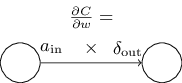
식
(32)
$\begin{eqnarray} \frac{\partial
C}{\partial w} = a_{\rm in} \delta_{\rm out} \nonumber\end{eqnarray}$
에서
활성 $a_{\rm in}$이 작은 값 $a_{\rm in} \approx 0$이면 경사 $\partial C / \partial w$ 또한 작아진다.
이러한 경우 가중치를 느리게 학습한다(learns slowly)고 말하며 이는 경사 하강 동안 많이 바뀌지 않는 것을 의미한다.
즉
(BP4)
$\begin{eqnarray}
\frac{\partial C}{\partial w^l_{jk}} = a^{l-1}_k \delta^l_j \nonumber\end{eqnarray}$
의
결론 중 하나는 낮은 활성(low-activation) 뉴런에서 나오는 가중치는 느리게 학습한다는 점이다.
(BP1) $\begin{eqnarray} \delta^L_j = \frac{\partial C}{\partial a^L_j} \sigma'(z^L_j) \nonumber\end{eqnarray}$ 에서 (BP4) $\begin{eqnarray} \frac{\partial C}{\partial w^l_{jk}} = a^{l-1}_k \delta^l_j \nonumber\end{eqnarray}$ 으로부터 얻을 수 있는 또 다른 것들이 있다. 출력 층을 한 번 살펴보자. (BP1) $\begin{eqnarray} \delta^L_j = \frac{\partial C}{\partial a^L_j} \sigma'(z^L_j) \nonumber\end{eqnarray}$ 에서 $\sigma'(z^L_j)$을 생각해보자. 1장에서 본 시그모이드 함수의 그래프를 다시 생각해보면 $\sigma(z^L_j)$이 $0$ 또는 $1$에 가까울 때 $\sigma$함수는 편평해진다. 이러한 경우 $\sigma'(z^L_j) \approx 0$이 된다. 그러므로 출력 뉴런이 낮은 활성($\approx 0$)이거나 높은 활성($\approx 1$)인 경우 마지막 층에 있는 가중치는 느리게 학습한다. 이 경우 출력 뉴런은 포화된다(saturated)고 말하며 그 결과 가중치는 학습을 멈춘다(또는 느리게 학습한다). 출력 뉴런의 편향에 대해서도 비슷하게 말할 수 있다.
초기 층에 대해서도 비슷한 통찰을 얻을 수 있다.
특히
(BP2)
$\begin{eqnarray}
\delta^l = ((w^{l+1})^T \delta^{l+1}) \odot \sigma'(z^l) \nonumber\end{eqnarray}$
에서
$\sigma'(z^l)$을 주의하자.
뉴런이 거의 포화되면 $\delta^l_j$이 작은 값이 될 가능성이 크다.
결국 포화된 뉴런으로 들어가는 가중치는 느리게 학습한다는 의미다.*
${w^{l+1}}^T
\delta^{l+1}$이 $\sigma'(z^l_j)$을 상쇄할 만큼 큰 값을 가지면
이 추론은 성립하지 않는다.
하지만 일반적인 경향을 이야기한 것이다.
요약하면 입력 뉴런이 낮은 활성이거나 출력 뉴런이 표화된 상태(높거나 낮은 활성)인 경우 가중치는 느리게 학습한다.
이러한 관찰이 그렇게 놀라운 것은 아니다.
여전히 그것들은 신경망이 학습할 때 무슨 일이 일어나는지 이해하는데 도움을 준다.
게다가 이러한 종류의 추론을 향상할 수 있다.
핵심적인 네 가지 식은 표준 시그모이드 함수 뿐만 아니라 어떤 활성 함수에 대해서도 성립한다(잠시뒤 볼 것 처럼 증명은 $\sigma$의 특별한 성질을 사용하지 않기 때문이다).
그리고 이 식을 이용해 특별히 원하는 학습 성질을 갖는 활성 함수를 설계(design)할 수 있다.
한 가지 예를 들면 $\sigma'$이 항상 양수이고 $0$에 가까워지지 않는 (시그모이드가 아닌) 활성 함수 $\sigma$를 선택한다고 가정하자.
일반적인 시그모이드 뉴련이 포화될 때 발생하는 학습의 둔화(slow-down)를 막을 수 있다.
이 책의 뒷부분에서 이러한 수정을 한 활성 함수 몇 가지를 살펴볼 것이다.
네 개의 식
(BP1)
$\begin{eqnarray}
\delta^L_j = \frac{\partial C}{\partial a^L_j} \sigma'(z^L_j) \nonumber\end{eqnarray}$
-(BP4)
$\begin{eqnarray}
\frac{\partial C}{\partial w^l_{jk}} = a^{l-1}_k \delta^l_j \nonumber\end{eqnarray}$
을
기억해두면 수정이 왜 했는지 어떠한 영향이 있는지 설명하는데 도움이 된다.
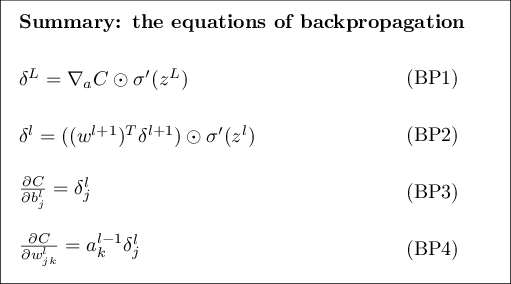
역전파 식을 대체하는 표현: 아다마르 곱을 이용해 역전파 식을 설명했다(특히 (BP1) $\begin{eqnarray} \delta^L_j = \frac{\partial C}{\partial a^L_j} \sigma'(z^L_j) \nonumber\end{eqnarray}$ 과 (BP2) $\begin{eqnarray} \delta^l = ((w^{l+1})^T \delta^{l+1}) \odot \sigma'(z^l) \nonumber\end{eqnarray}$ 에 주목하자). 아마다르 곱에 익숙하지 않으면 이 표현은 와닿지 않을 수 있다. 쉽게 이해할 수 있는 행렬 곱셈으로 설명하는 다른 방법이 있다. (1) (BP1) $\begin{eqnarray} \delta^L_j = \frac{\partial C}{\partial a^L_j} \sigma'(z^L_j) \nonumber\end{eqnarray}$ 을 다음과 같이 쓸 수 있음을 보여라. $$\begin{eqnarray} \delta^L = \Sigma'(z^L) \nabla_a C, \tag{33}\end{eqnarray}$$ 여기서 $\Sigma'(z^L)$은 정사각행렬(square matrix)이며 대각선 원소(diagonal entries)는 $\sigma'(z^L_j)$이고 대각선을 제외한 원소(off-diagonal entries)는 $0$이다. 이 행렬은 행렬 곱셈으로 $\nabla_a C$에 영향을 준다. (2) (BP2) $\begin{eqnarray} \delta^l = ((w^{l+1})^T \delta^{l+1}) \odot \sigma'(z^l) \nonumber\end{eqnarray}$ 를 다음과 같이 쓸 수 있음을 보여라. $$\begin{eqnarray} \delta^l = \Sigma'(z^l) (w^{l+1})^T \delta^{l+1}. \tag{34}\end{eqnarray}$$ (3) 위의 (1)과 (2)를 합쳐 다음 식이 성립함을 보여라. $$\begin{eqnarray} \delta^l = \Sigma'(z^l) (w^{l+1})^T \ldots \Sigma'(z^{L-1}) (w^L)^T \Sigma'(z^L) \nabla_a C \tag{35}\end{eqnarray}$$ 행렬 곱셈에 익숙한 독자들은 (BP1) $\begin{eqnarray} \delta^L_j = \frac{\partial C}{\partial a^L_j} \sigma'(z^L_j) \nonumber\end{eqnarray}$ 과 (BP2) $\begin{eqnarray} \delta^l = ((w^{l+1})^T \delta^{l+1}) \odot \sigma'(z^l) \nonumber\end{eqnarray}$ 보다 이 식을 이해하는 것이 쉬울 수 있다. (BP1) $\begin{eqnarray} \delta^L_j = \frac{\partial C}{\partial a^L_j} \sigma'(z^L_j) \nonumber\end{eqnarray}$ 과 (BP2) $\begin{eqnarray} \delta^l = ((w^{l+1})^T \delta^{l+1}) \odot \sigma'(z^l) \nonumber\end{eqnarray}$ 에 중심으로 설명한 이유는 수치적으로 구현하는데 더 빠른 방법이기 때문이다.
이제 핵심적인 네 가지 식 (BP1) $\begin{eqnarray} \delta^L_j = \frac{\partial C}{\partial a^L_j} \sigma'(z^L_j) \nonumber\end{eqnarray}$ -(BP4) $\begin{eqnarray} \frac{\partial C}{\partial w^l_{jk}} = a^{l-1}_k \delta^l_j \nonumber\end{eqnarray}$ 을 증명해보자. 네 개의 식 모두 다변수 미적분학의 연쇄법칙(chain rule) 결과이다. 연쇄법칙에 익숙하다면 계속 읽기 전에 스스로 유도해보는 것을 추천한다.
식 (BP1) $\begin{eqnarray} \delta^L_j = \frac{\partial C}{\partial a^L_j} \sigma'(z^L_j) \nonumber\end{eqnarray}$ 을 먼저 살펴보자. 이는 출력 오차 $\delta^L$에 대한 식이다. 이 식을 다시 떠올려보면 정의에 의해 다음과 같이 쓸 수 있다. $$\begin{eqnarray} \delta^L_j = \frac{\partial C}{\partial z^L_j}. \tag{36}\end{eqnarray}$$ 연쇄법칙을 적용하여 위의 편도함수를 출력 활성에 대한 편도함수로 다시 쓰면 다음과 같다. $$\begin{eqnarray} \delta^L_j = \sum_k \frac{\partial C}{\partial a^L_k} \frac{\partial a^L_k}{\partial z^L_j}, \tag{37}\end{eqnarray}$$ 여기서 합은 출력 층에 있는 모든 뉴런 $k$에 대한 값이다. 물론 $k$번째 뉴런의 출력 활성 $a^L_k$은 $k = j$일때 $j$번째 뉴런에 대한 가중치 입력 $z^L_j$에 따라 달라진다. 그러므로 $k \neq j$일때 $\partial a^L_k / \partial z^L_j$은 사라진다. 그 결과 위 식을 다음과 같이 간단히 나타낼 수 있다. $$\begin{eqnarray} \delta^L_j = \frac{\partial C}{\partial a^L_j} \frac{\partial a^L_j}{\partial z^L_j}. \tag{38}\end{eqnarray}$$ $a^L_j = \sigma(z^L_j)$이므로 우변에 있는 두 번째 항을 $\sigma'(z^L_j)$로 쓰면 식은 다음과 같다. $$\begin{eqnarray} \delta^L_j = \frac{\partial C}{\partial a^L_j} \sigma'(z^L_j), \tag{39}\end{eqnarray}$$ 이 식은 (BP1) $\begin{eqnarray} \delta^L_j = \frac{\partial C}{\partial a^L_j} \sigma'(z^L_j) \nonumber\end{eqnarray}$ 을 원소 형태로 쓴 것이다.
다음으로 (BP2) $\begin{eqnarray} \delta^l = ((w^{l+1})^T \delta^{l+1}) \odot \sigma'(z^l) \nonumber\end{eqnarray}$ 을 증명하자. 이 식을 이용해 다음 층의 오차 $\delta^{l+1}$에 대한 오차 $\delta^l$을 구할 수 있다. 이를 위해 $\delta^l_j = \partial C / \partial z^l_j$을 $\delta^{l+1}_k = \partial C / \partial z^{l+1}_k$에 대한 식으로 쓰자. 연쇄 법칙을 이용해 다음과 같이 쓸 수 있다. $$\begin{eqnarray} \delta^l_j & = & \frac{\partial C}{\partial z^l_j} \tag{40}\\ & = & \sum_k \frac{\partial C}{\partial z^{l+1}_k} \frac{\partial z^{l+1}_k}{\partial z^l_j} \tag{41}\\ & = & \sum_k \frac{\partial z^{l+1}_k}{\partial z^l_j} \delta^{l+1}_k, \tag{42}\end{eqnarray}$$ 여기서 마지막 줄에서 우변에 있는 두 개의 항을 서로 바꾸고 $\delta^{l+1}_k$의 정의로 치환했다. 마지막 줄의 첫 번째 항을 계산하기 위해 다음 식을 이용하자. $$\begin{eqnarray} z^{l+1}_k = \sum_j w^{l+1}_{kj} a^l_j +b^{l+1}_k = \sum_j w^{l+1}_{kj} \sigma(z^l_j) +b^{l+1}_k. \tag{43}\end{eqnarray}$$ 식을 미분하여 다음 식을 얻을 수 있다. $$\begin{eqnarray} \frac{\partial z^{l+1}_k}{\partial z^l_j} = w^{l+1}_{kj} \sigma'(z^l_j). \tag{44}\end{eqnarray}$$ 식 (42) $\begin{eqnarray} & = & \sum_k \frac{\partial z^{l+1}_k}{\partial z^l_j} \delta^{l+1}_k \nonumber\end{eqnarray}$ 에 대입하여 다음 식을 얻는다. $$\begin{eqnarray} \delta^l_j = \sum_k w^{l+1}_{kj} \delta^{l+1}_k \sigma'(z^l_j). \tag{45}\end{eqnarray}$$ 이는 (BP2) $\begin{eqnarray} \delta^l = ((w^{l+1})^T \delta^{l+1}) \odot \sigma'(z^l) \nonumber\end{eqnarray}$ 을 원소 형태로 쓴 것이다.
증명하고자 하는 나머지 두 개의 식은 (BP3) $\begin{eqnarray} \frac{\partial C}{\partial b^l_j} = \delta^l_j \nonumber\end{eqnarray}$ 와 (BP4) $\begin{eqnarray} \frac{\partial C}{\partial w^l_{jk}} = a^{l-1}_k \delta^l_j \nonumber\end{eqnarray}$ 이다. 이 식 또한 연쇄법칙을 이용해 위 식의 증명과 비슷한 방법으로 증명할 수 있다. 이는 예제로 남겨두겠다.
역전파의 핵심적인 네 가지 식의 증명을 해보았다. 증명은 다소 복잡해 보일 수 있다. 하지만 단지 연쇄법칙을 적용한 결과일 뿐이다. 역전파를 다변수 미적분학의 연쇄법칙을 체계적으로 적용하여 비용함수의 경사를 계산하는 방법으로 생각할 수 있다. 그게 정말 역전파의 모든 것이고 나머지는 세부적인 것이다.
역전파 식은 비용함수의 경사를 계산하는 방법을 제공한다. 이를 알고리즘의 형태로 써보자.
알고리즘을 살펴보면 왜 역전파(backpropagation)라 부르는지 알 수 있다. 마지막 층에서부터 오차 벡터 $\delta^l$을 뒤로(backward) 계산한다. 신경망을 뒤로 이동한다는 것이 이상하게 보일 수 있다. 하지만 역전파의 증명을 생각해보면 뒤로 이동하는 것은 비용이 신경망의 출력 함수라는 사실의 결과이다. 비용이 이전의 가중치와 편향에 의해 어떻게 변하는지 이해하려면 반복해서 연쇄법칙을 적용해야한다. 연쇄법칙은 신경망의 층을 뒤로 이동하며 작용하고 유용한 식을 얻는다.
위에서 설명한 것 처럼 역전파 알고리즘은 하나의 학습 데이터에 대한 비용함수 $C = C_x$의 경사를 계산한다. 실제로 역전파와 많은 학습 데이터에 대한 경사를 계산하는 통계적 경사 하강과 같은 학습 알고리즘을 결합하는 것은 흔히 사용하는 방법이다. 특히 $m$개의 학습 데이터의 미니 배치가 주어지면 다음의 알고리즘은 미니 배치를 기반으로 경사 하강 학습 단계(gradient descent learning step)를 수행한다.
물론 통계적 경사 하강을 실제로 구현할 때 학습 데이터에 대한 미니 배치를 만드는 외부 루프(outer loop)가 필요하다. 그리고 외부 루프는 학습의 세대마다 반복된다. 알고리즘을 간결하게 나타내려고 이 부분을 생략했다.
역전파를 개략적으로 이해했으므로 이제 1장에서 사용한 코드에서 역전파 구현을 이해할 수 있다.
1장의 내용을 생각해보면 코드는 Network 클래스의 update_mini_batch와 backprop 메소드에 있다.
이 메소드에 있는 코드가 위에서 설명한 알고리즘을 직접 구현한 것이다.
특히 update_mini_batch메소드는 학습 데이터의 현재 mini_batch에 대한 경사를 계산하여 Network의 가중치와 편향을 갱신한다.
class Network(object):
...
def update_mini_batch(self, mini_batch, eta):
"""Update the network's weights and biases by applying
gradient descent using backpropagation to a single mini batch.
The "mini_batch" is a list of tuples "(x, y)", and "eta"
is the learning rate."""
nabla_b = [np.zeros(b.shape) for b in self.biases]
nabla_w = [np.zeros(w.shape) for w in self.weights]
for x, y in mini_batch:
delta_nabla_b, delta_nabla_w = self.backprop(x, y)
nabla_b = [nb+dnb for nb, dnb in zip(nabla_b, delta_nabla_b)]
nabla_w = [nw+dnw for nw, dnw in zip(nabla_w, delta_nabla_w)]
self.weights = [w-(eta/len(mini_batch))*nw
for w, nw in zip(self.weights, nabla_w)]
self.biases = [b-(eta/len(mini_batch))*nb
for b, nb in zip(self.biases, nabla_b)]
편도함수 $\partial C_x / \partial b^l_j$과 $\partial C_x / \partial w^l_{jk}$을 계산하기 위해 backprop메소드를 사용하는 delta_nabla_b, delta_nabla_w = self.backprop(x, y) 줄에서 대부분의 일을 수행한다.
backprop메소드는 이전 절에 있는 알고리즘을 구현한다.
신경망의 층을 나타내는 인덱스에 약간 다른 방법을 사용하여 구현한다.
파이썬의 특징을 이용하기 위해 이 방법을 사용했다.
리스트의 끝에서 뒤로 세기 위해 음수의 리스트 인덱스를 사용한다.
예를 들어 [-3]은 리스트의 마지막에서 세 번째 위치한 원소를 의미한다.
backprop에 대한 코드는 아래에 있으며 $\sigma$함수, 도함수 $\sigma'$, 비용함수의 도함수를 계산하는 몇 개의 함수를 함께 구현하여 이용한다.
이것들을 포함하여 코드를 혼자서 이해할 수 있어야 한다.
이해되지 않는 부분이 있다면 코드의 원본을 보고 도움을 받을 수 있다.
class Network(object):
...
def backprop(self, x, y):
"""Return a tuple "(nabla_b, nabla_w)" representing the
gradient for the cost function C_x. "nabla_b" and
"nabla_w" are layer-by-layer lists of numpy arrays, similar
to "self.biases" and "self.weights"."""
nabla_b = [np.zeros(b.shape) for b in self.biases]
nabla_w = [np.zeros(w.shape) for w in self.weights]
# feedforward
activation = x
activations = [x] # list to store all the activations, layer by layer
zs = [] # list to store all the z vectors, layer by layer
for b, w in zip(self.biases, self.weights):
z = np.dot(w, activation)+b
zs.append(z)
activation = sigmoid(z)
activations.append(activation)
# backward pass
delta = self.cost_derivative(activations[-1], y) * \
sigmoid_prime(zs[-1])
nabla_b[-1] = delta
nabla_w[-1] = np.dot(delta, activations[-2].transpose())
# Note that the variable l in the loop below is used a little
# differently to the notation in Chapter 2 of the book. Here,
# l = 1 means the last layer of neurons, l = 2 is the
# second-last layer, and so on. It's a renumbering of the
# scheme in the book, used here to take advantage of the fact
# that Python can use negative indices in lists.
for l in xrange(2, self.num_layers):
z = zs[-l]
sp = sigmoid_prime(z)
delta = np.dot(self.weights[-l+1].transpose(), delta) * sp
nabla_b[-l] = delta
nabla_w[-l] = np.dot(delta, activations[-l-1].transpose())
return (nabla_b, nabla_w)
...
def cost_derivative(self, output_activations, y):
"""Return the vector of partial derivatives \partial C_x /
\partial a for the output activations."""
return (output_activations-y)
def sigmoid(z):
"""The sigmoid function."""
return 1.0/(1.0+np.exp(-z))
def sigmoid_prime(z):
"""Derivative of the sigmoid function."""
return sigmoid(z)*(1-sigmoid(z))
network.py를 수정해라.
이 접근 방식의 장점은 선형 대수학에 대한 현대적인 라이브러리를 완전히 이용한다는 것이다.
그 결과 미니 배치를 반복하는 것보다 빠르게 동작할 수 있다.
(예를 들어 내가 가지고 있는 노트북에서 MNIST에 대해 동작할 때 속도는 약 2배가 된다.)
실제로 역전파에 대한 모든 라이브러리는 이 완전한 행렬 기반 접근 방식을 이용하거나 약간 변형해서 사용한다.
어떤 점에서 역전파 알고리즘은 빠른 것일까? 질문에 답하기 위해 경사를 계산하는 또 다른 접근 방식을 생각해보자. 신경망 연구가 막 시작된 시기라고 상상해보자. 아마도 1950년대나 1960년대 즈음일 것이다. 당신은 경사 하강을 이용한 학습을 생각한 최초의 사람이다! 하지만 생각을 구현하기 위해 비용함수의 경사를 계산할 방법이 필요하다. 당신은 미적분학 지식을 바탕으로 경사를 계산하기 위해 연쇄법칙을 사용할 수 있는지 알아보기로 결정했다. 하지만 곧 수식이 복잡하다는 것을 알았고 당신은 좌절에 빠진다. 그래서 다른 방식을 찾으려고 시도한다. 비용을 가중치에 대한 함수 $C = C(w)$로 생각하기로 결정한다(잠시뒤 편향에대해 다룰 것이다). 가중치에 번호를 매겨 $w_1, w_2, \ldots$로 나타내고 어떤 가중치 $w_j$에 대해 $\partial C / \partial w_j$을 계산하고자 한다. 이를 계산하는 방법은 다음과 같이 근사식을 사용하는 것이다. $$\begin{eqnarray} \frac{\partial C}{\partial w_{j}} \approx \frac{C(w+\epsilon e_j)-C(w)}{\epsilon}, \tag{46}\end{eqnarray}$$ 여기서 $\epsilon > 0$은 작은 양수이고 $e_j$는 $j$ 방향 단위 벡터이다. 즉 두 개의 약간 다른 값 $w_j$에 대한 비용 $C$를 계산해서 $\partial C / \partial w_j$을 추정할 수 있고 그리고 식 (46) $\begin{eqnarray} \frac{\partial C}{\partial w_{j}} \approx \frac{C(w+\epsilon e_j)-C(w)}{\epsilon} \nonumber\end{eqnarray}$ 을 적용한다. 같은 아이디어로 편향에 대한 편도함수 $\partial C / \partial b$을 계산할 것이다.
이 방식은 좋아 보인다. 이는 개념적으로 간단하고 단지 몇 줄의 코드로 구현하기에 쉽다. 경사를 계산하기 위해 연쇄법칙을 사용하는 것보다 훨씬 좋아보인다.
이 접근 방식은 좋아 보이지만 실제로 코드를 구현하면 매우 느리게 동작한다. 왜 그럴까? 신경망에 수 백만 개의 가중치가 있다고 상상해보자. 그러면 개별 가중치 $w_j$에 대해 $\partial C / \partial w_j$을 계산하기 위해 $C(w+\epsilon e_j)$을 계산해야 한다. 즉 경사를 계산하기 위해 비용 함수를 수 백만 번 계산해야 한다. 이는 (학습 데이터 당) 신경망을 통해 수 백만 번 앞으로 전달해야 한다. $C(w)$ 또한 계산해야 하며 신경망을 통한 수 백만과 하나의 통과의 합이다.
역전파 알고리즘이 기발한 점은 신경망을 통해 한번 앞으로 전달한 후 한 번 뒤로 전달하여 동시에 모든 편도함수 $\partial C / \partial w_j$을 계산한다는 것이다.
대략 뒤로 전달(backward pass)하는 계산 비용은 앞으로 전달(forward pass)*
그럴듯 하지만 이는 신중하게 말하기 위해 약간의 분석이 필요하다.
백워드 패스(backward pass)에서 가중치 행렬의 전치 행렬을 곱하지만
포워드 패스(forward pass)에서 지배적인 계산 비용은 가중치 행렬을 곱셈하는 것이므로
이는 그럴듯 하다.
이 연산은 비슷한 계산 비용을 가진다.
과
비슷하다.
그래서 역전파의 전체 비용은 신경망에서 포워드 패스를 두 번하는 것과 비슷하다.
식
(46)
$\begin{eqnarray} \frac{\partial
C}{\partial w_{j}} \approx \frac{C(w+\epsilon
e_j)-C(w)}{\epsilon} \nonumber\end{eqnarray}$
을
바탕으로 한 접근 방식에서 필요한 백맨번과 한 번의 포워드 패스를 비교해보라.
그리거 겉보기에 역전파가 식
(46)
$\begin{eqnarray} \frac{\partial
C}{\partial w_{j}} \approx \frac{C(w+\epsilon
e_j)-C(w)}{\epsilon} \nonumber\end{eqnarray}$
을
바탕으로 한 접근 방식보다 복잡해 보이지만
이는 훨씬 더 빠르다.
이 속도는 1986년에 처음으로 완전히 달성했고 신경망이 풀 수 있는 문제의 범위를 넓혔다. 그리고 신경망을 사용하는 사람들이 많아졌다. 물론 역전파는 만병통치약이 아니다. 1980년대 후반에 사람들은 특히 역전파를 이용해 심층 신경망(deep neural networks), 즉 많은 은닉층이 있는 신경망을 학습할 때 한계에 부딪쳤다. 이 책의 뒷부분에서 역전파를 이용해 심층 신경망을 학습하는 것이 가능한 기발한 아이디어를 살펴보겠다.
설명했듯이 역전파는 두 가지 미스테리를 제시한다. 첫 번째로 알고리즘이 실제로 하는 일은 무엇일까? 출력에서 역전파되는 오차에 대해 이해해 보았다. 하지만 행렬과 벡터 곱셈을 할 때 무슨 일이 일어나는지 더 깊은 이해를 할 수 있을까? 두 번째 미스테리는 어떻게 역전파를 발견했냐는 물음이다. 알고리즘의 단계를 따라가거나 알고리즘이 동작하는 방식을 증명하는 것은 별개이다. 하지만 이것이 문제를 잘 이해해 알고리즘을 처음으로 발견할 수 있다는 것을 의미하지 않는다. 역전파 알고리즘을 발견할 수 있는 그럴듯한 추론의 과정이 있는가? 이번 절에서는 위의 두 가지 미스테리에 대해 다루겠다.
알고리즘이 동작하는 방식에 대한 직관을 기르기 위해 신경망의 가중치 $w^l_{jk}$에 작은 변화 $\Delta w^l_{jk}$를 준다고 상상하자.
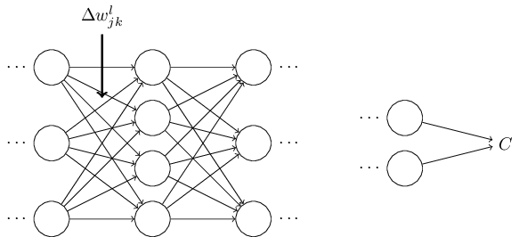
가중치에서 그 변화는 상응하는 뉴런의 출력 활성의 변화를 일으킨다.
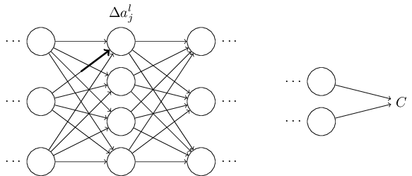
그리고 다음 층에 있는 모든(all) 활성을 변화시킨다.
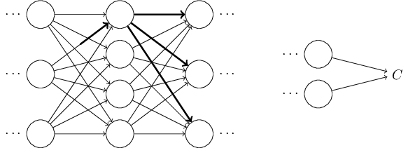
이 변화는 결국 다음 층을 변화시키고 그 다음 층을 계속 변화시켜 마지막 층에서 변화를 일으킨다.
그리고 비용함수를 변화시킨다.
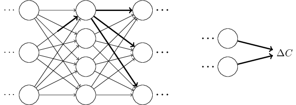
다음 식에 의해 비용에서 변화 $\Delta C$는 가중치의 변화 $\Delta w^l_{jk}$과 연관된다.
$$\begin{eqnarray}
\Delta C \approx \frac{\partial C}{\partial w^l_{jk}} \Delta w^l_{jk}.
\tag{47}\end{eqnarray}$$
$\frac{\partial C}{\partial w^l_{jk}}$을 계산하는 가능한 방법은 작은 변화 $w^l_{jk}$이 어떻게 전달되어 $C$의 변화를 일으키는지 신중하게 따라가보는 것이다.
쉽게 계산할 수 있는 양에 대해 모든 것을 신중하게 표현할 수 있다면 $\partial C / \partial w^l_{jk}$을 계산할 수 있다.
이를 한 번 해보자.
변화 $\Delta w^l_{jk}$은 $l$번째 층에 있는 $j$번째 뉴런의 활성을 $\Delta a^{l}_j$만큼 변화시킨다.
이 변화는 다음 식에서 주어진다
$$\begin{eqnarray}
\Delta a^l_j \approx \frac{\partial a^l_j}{\partial w^l_{jk}} \Delta w^l_{jk}.
\tag{48}\end{eqnarray}$$
활성의 변화 $\Delta a^l_{j}$은 다음 층 $(l+1)$번째 층에 있는 모든(all) 홀성을 변화시킨다.
예를 들어 이 활성 중 하나인 $a^{l+1}_q$에 집중해서 살펴보자.
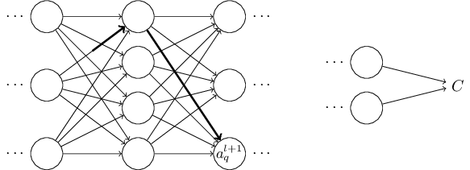
사실 이는 다음과 같은 변화를 일으킨다
$$\begin{eqnarray}
\Delta a^{l+1}_q \approx \frac{\partial a^{l+1}_q}{\partial a^l_j} \Delta a^l_j.
\tag{49}\end{eqnarray}$$
식
(48)
$\begin{eqnarray}
\Delta a^l_j \approx \frac{\partial a^l_j}{\partial w^l_{jk}} \Delta w^l_{jk} \nonumber\end{eqnarray}$
을
대입하면 다음과 같다.
$$\begin{eqnarray}
\Delta a^{l+1}_q \approx \frac{\partial a^{l+1}_q}{\partial a^l_j} \frac{\partial a^l_j}{\partial w^l_{jk}} \Delta w^l_{jk}.
\tag{50}\end{eqnarray}$$
물론 변화 $\Delta a^{l+1}_q$은 결국 다음 층의 활성을 변화시킨다.
사실 $w^l_{jk}$에서 $C$까지 신경망을 따라가는 경로를 상상할 수 있다.
다음 활성의 변화를 일으키는 각 활성의 변화를 일으키고 결국 출력에서 비용을 변화시키는 것을 생각할 수 있다.
경로가 활성 $a^l_j, a^{l+1}_q, \ldots, a^{L-1}_n, a^L_m$을 따라 지나가면 결과 식은 다음과 같다.
$$\begin{eqnarray}
\Delta C \approx \frac{\partial C}{\partial a^L_m}
\frac{\partial a^L_m}{\partial a^{L-1}_n}
\frac{\partial a^{L-1}_n}{\partial a^{L-2}_p} \ldots
\frac{\partial a^{l+1}_q}{\partial a^l_j}
\frac{\partial a^l_j}{\partial w^l_{jk}} \Delta w^l_{jk},
\tag{51}\end{eqnarray}$$
즉 지나가는 추가적인 뉴런에 대해 $\partial a / \partial a$형태의 항이 있고 마지막에 $\partial C/\partial a^L_m$ 항이 있다.
이는 신경망의 특정한 경로에 있는 활성의 변화 때문에 $C$가 변한다는 의미이다.
물론 $w^l_{jk}$의 변화가 전달되어 비용에 영향을 주는 많은 경로가 있다.
여기서는 하나의 경로만 고려하였다.
$C$의 전체 변화를 계산하기 위해 가중치에서 마지막 비용까지 가능한 모든 경로를 합해야 한다.
즉 식은 다음과 같다.
$$\begin{eqnarray}
\Delta C \approx \sum_{mnp\ldots q} \frac{\partial C}{\partial a^L_m}
\frac{\partial a^L_m}{\partial a^{L-1}_n}
\frac{\partial a^{L-1}_n}{\partial a^{L-2}_p} \ldots
\frac{\partial a^{l+1}_q}{\partial a^l_j}
\frac{\partial a^l_j}{\partial w^l_{jk}} \Delta w^l_{jk},
\tag{52}\end{eqnarray}$$
여기서 경로에 따라 가능한 모든 중간 뉴런을 선택하여 더했다.
식
(47)
$\begin{eqnarray}
\Delta C \approx \frac{\partial C}{\partial w^l_{jk}} \Delta w^l_{jk} \nonumber\end{eqnarray}$
과
비교하면 다음과 같다.
$$\begin{eqnarray}
\frac{\partial C}{\partial w^l_{jk}} = \sum_{mnp\ldots q} \frac{\partial C}{\partial a^L_m}
\frac{\partial a^L_m}{\partial a^{L-1}_n}
\frac{\partial a^{L-1}_n}{\partial a^{L-2}_p} \ldots
\frac{\partial a^{l+1}_q}{\partial a^l_j}
\frac{\partial a^l_j}{\partial w^l_{jk}}.
\tag{53}\end{eqnarray}$$
식
(53)
$\begin{eqnarray}
\frac{\partial C}{\partial w^l_{jk}} = \sum_{mnp\ldots q} \frac{\partial C}{\partial a^L_m}
\frac{\partial a^L_m}{\partial a^{L-1}_n}
\frac{\partial a^{L-1}_n}{\partial a^{L-2}_p} \ldots
\frac{\partial a^{l+1}_q}{\partial a^l_j}
\frac{\partial a^l_j}{\partial w^l_{jk}} \nonumber\end{eqnarray}$
은
복잡해보인다.
하지만 이는 아주 좋은 직관적인 해석이다.
신경망에서 가중치에 대한 $C$의 변화율을 계산할 것이다.
식을 통해 말하고자 하는 바는 신경망에서 두 뉴런 사이의 모든 선(edge)은 다른 뉴런의 활성에 대한 한 뉴런의 활성의 편도함수인 비율 계수와 연관된다는 것이다.
첫 번째 뉴런에 대한 첫 번째 가중치에서 나오는 선은 비율 계수 $\partial a^{l}_j / \partial w^l_{jk}$을 가진다.
경로에 대한 비율 계수는 단지 경로에 따른 비율 계수들의 곱이다.
그리고 전체 변화율 $\partial C / \partial w^l_{jk}$은 초기 가중치에서 마지막 비용을 따라가는 모든 경로의 비율 계수의 합이다.
하나의 경로에 대한 이 과정은 아래 그림과 같다.
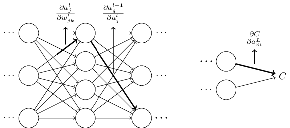
지금까지 제공한 것은 경험적인 논증(heuristic argument)으로 신경망에서 가중치를 바꿀 때 무슨 일이 일어나는지 생각하는 방법을 설명했다.
이 논증을 더 발전시킬 수 있는 생각을 살펴보자.
먼저 식
(53)
$\begin{eqnarray}
\frac{\partial C}{\partial w^l_{jk}} = \sum_{mnp\ldots q} \frac{\partial C}{\partial a^L_m}
\frac{\partial a^L_m}{\partial a^{L-1}_n}
\frac{\partial a^{L-1}_n}{\partial a^{L-2}_p} \ldots
\frac{\partial a^{l+1}_q}{\partial a^l_j}
\frac{\partial a^l_j}{\partial w^l_{jk}} \nonumber\end{eqnarray}$
에서
모든 개별 편도함수에 대한 식을 유도할 수 있다.
미적분을 조금 이용하면 쉽게 할 수 있다.
그런 다음 행렬 곰셈으로 인덱스에 대해 모든 합을 쓰는 방법을 알 수 있다.
이는 꽤 길고 지루한 작업이라 인내심을 요하지만 특별한 통찰력이 필요한 것은 아니다.
이 모든 것을 하고 가능한 간단하게 하면 역전파 알고리즘이 된다.
그래서 역전파 알고리즘을 모든 경로에 대한 비율 계수의 합을 계산하는 방법으로 생각할 수 있다.
또는 조금 다르게 표현하면 역전파 알고리즘은 신경망을 통해 출력에 도달하여 비용에 영향을 줄 때 가중치와 편향의 작은 변화를 추적할 수 있는 방법이다.
이제 여기서 더 이상 살펴보지 않을 것이다. 자세한 사항을 살펴보기에는 상당한 노력이 필요하고 골치아플 수 있다. 한 번 도전하고 싶으면 시도해봐도 좋다. 그렇지 않더라도 이러한 생각은 역전파 알고리즘에 대한 통찰력을 줄 수 있다.
다른 미스테리를 살펴보자.
어떻게 역전파가 처음 발견되었을까?
사실 위에서 개략적으로 설명한 방법을 따라가면 역전파의 증명을 할 수 있을 것이다.
하지만 증명은 이 장에서 첫 부분에서 설명한 것보다 꽤 길고 복잡하다.
그래서 어떻게 (미스테리하지만) 그렇게 짧은 증명이 발견되었을까?
증명을 자세히 써보면 몇가지 간단한 점들을 찾을 수 있다.
단순화하여 짧은 증명을 쓸 수 있다.
그리고 단순화가 분명해진다.
그래서 이를 반복한다.
몇 번 반복하면 처음에*
재치있는 단계 하나가 필요하다.
식 (53)에서 중간 변수는 $a_q^{l+1}$같은 활성이다.
$z^{l+1}_q$와 같은 가중치 입력을 중간 변수로 바꾸어 사용하는 아이디어다.
이러한 아이디어를 쓰지 않으면 활성 $a_q^{l+1}$을 계속 사용해야 하며
얻을 수 있는 증명은 이 장의 초기에 주어진 증명보다 다소 복잡해진다.
봤던 증명이 나온다.
짧지만 다소 모호하다. 건설에 대한 모든 표지판이 제거되었기 때문이다.
물론 초기 증명에 미스테리한 점은 없다.
이번 절에서 설명한 증명을 단순화하는 작업만 있을 뿐이다.
Deep Learning, book by Ian Goodfellow, Yoshua Bengio, and Aaron Courville
한글 글꼴(korean fonts): 나눔 글꼴
In academic work,
please cite this book as: Michael A. Nielsen, "Neural Networks and
Deep Learning", Determination Press, 2015
This work is licensed under a
Creative Commons Attribution-NonCommercial 3.0 Unported License
. This means you're free to copy, share, and
build on this book, but not to sell it. If you're interested in
commercial use, please contact me(Michael A. Nielsen).
학업적으로 이용 시 다음과 같이 인용해 주세요: Michael A. Nielsen, "Neural Networks and
Deep Learning", Determination Press, 2015

이 저작물은
크리에이티브 커먼즈 저작자표시-비영리 3.0 Unported 라이선스
에 따라 이용할 수 있습니다.
상업적 이용을 원하면, 저자(Michael A. Nielsen)에게 연락을 주세요.
마지막 깁고 더함: 19/06/21